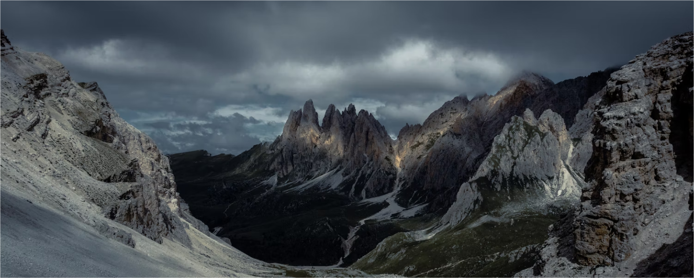
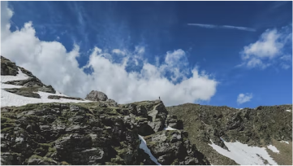
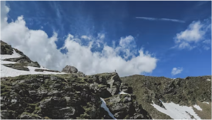

Traveller
Choose your trip
We choose hotels which offer a great location, a high standard of comfort and quality, and a solid value to our guests. These inns offer a superbly satisfying mix of a welcoming atmosphere, traditional cuisine, and authentic charm. They are typically small, independently-owned properties which reflect the character and hospitality of the surrounding alpine community. We know the owners personally, have a longstanding relationship with them, and we find they bend over backwards to provide our guests with an exceptional experience.


 



2019 Tour dates
- Dec 5 - 13 - Christmas in Switzerland - Enjoy authentic Switzerland at its holiday best AVAILABLE
- Dec 3 - 11 - Christmas in Switzerland - Enjoy authentic Switzerland at its holiday bestAVAILABLE
- Oct 9 - 18 - Scenic Alps by Rail The Grand Train Tour of Switzerland ONLY 4 SPOT AVAILABLE
- Sept 29 - Oct 5 - Discover Swiss Cuisine - Italian Inspired - A culinary adventure in Lugano SOLD OUT
- Sept 26 - Oct 5 - Scenic Alps by Rail The Grand Train Tour of Switzerland SOLD OUT
- Sept 19 - 29 - Deluxe Haute Route Chamonix to Zermatt Classic trek has a new standard SOLD OUT